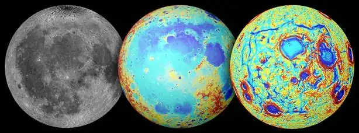
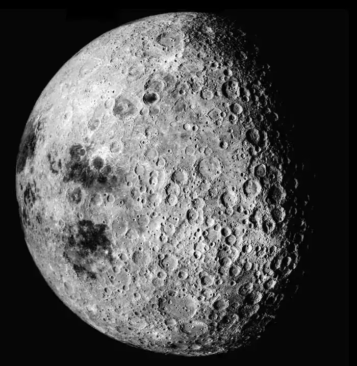
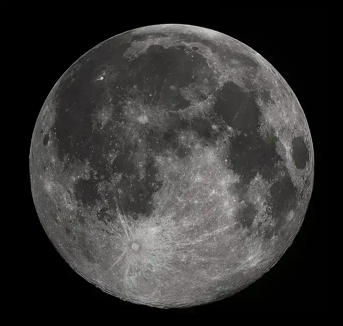

The hypothesis
Proposed in the 1970s, the giant-impact idea holds that a body roughly the size of Mars — often called Theia — struck the proto-Earth at a glancing angle around 4.5 billion years ago. Debris thrown into orbit coalesced into the Moon.
Maps, diagrams and images






It explains several awkward facts at once: the Moon has a small iron core and low density (it formed from mantle material, not a whole planet), the Earth–Moon system has high angular momentum, and the Moon's orbit is close to the ecliptic.
The isotopic problem
The prediction is that the Moon should be made largely of Theia's material, which should differ from Earth's. Instead, lunar rocks returned by Apollo have oxygen, titanium, silicon and tungsten isotope ratios almost identical to Earth's mantle.
That similarity is difficult to produce in a standard impact. Possible answers: the impactor was made of the same material as Earth (a coincidence that needs explaining), the impact was more energetic and the two bodies mixed thoroughly, the Moon formed from a vapour-rich synestia, or the Moon formed after a series of smaller impacts.
Canonical impact: one big grazing hit. Simple, but struggles with the isotope match.
Synestia: a rapidly spinning, partly vaporised mass, with the Moon condensing inside it. Explains mixing; requires fine-tuned conditions.
Hit-and-run and multiple impacts: several collisions with similar bodies, each mixing material. Growing support, harder to model.
Capture or fission: old alternatives, effectively excluded by dynamics and angular momentum.
What is settled
That the Moon formed from a giant impact is close to consensus; how exactly is not. Samples from Chang'e-5 and Chang'e-6 and improved numerical modelling are the current front line.
The archive labels this live debate rather than documented because the mechanism is accepted while the standard model's details fail to match the best measurements.
Sources for this page
- Wikipedia, “Giant-impact hypothesis” — evidence and variantsen.wikipedia.org
- Canup (2012), Science — forming a Moon with Earth-like compositiondoi.org
- Lock & Stewart (2017), JGR Planets — the synestia modeldoi.org
- Wikipedia, “Moon” — bulk properties and explorationen.wikipedia.org
Open resources on this topic
- PapersOpen-access articles: DOAJ · PubMed Central · Internet Archive Scholar
- BooksPublic-domain and borrowable copies: Open Library · Project Gutenberg · Google Books · Internet Archive
More images
Cite this page
Momin, S. (2026). How the Moon Formed. The Larger World Archive. https://drsamonline.github.io/LARGE_GLOBE/moon-formation.htmlMomin, Sohil. “How the Moon Formed.” The Larger World Archive, 2026, https://drsamonline.github.io/LARGE_GLOBE/moon-formation.html.Momin, Sohil. “How the Moon Formed.” The Larger World Archive, 2026. https://drsamonline.github.io/LARGE_GLOBE/moon-formation.html.@misc{how2026moon,
author = {Momin, Sohil},
title = {How the Moon Formed},
year = {2026},
howpublished = {The Larger World Archive},
url = {https://drsamonline.github.io/LARGE_GLOBE/moon-formation.html},
note = {Last reviewed 20 November 2026}
}Last reviewed 20 November 2026 · Corrections policy · this page is not peer reviewed